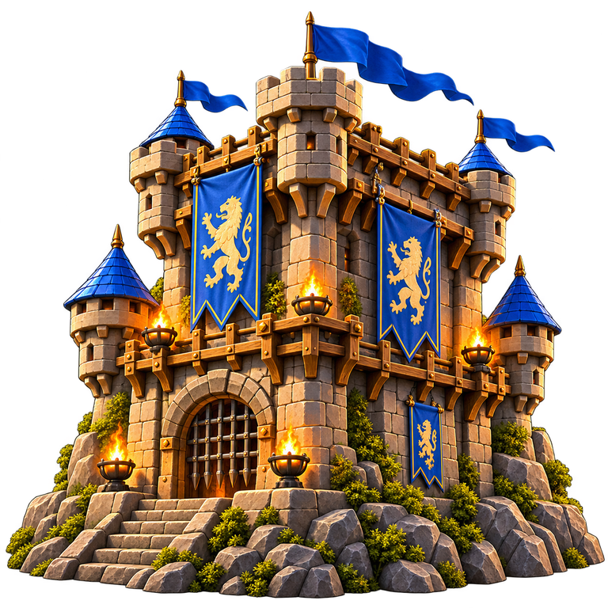
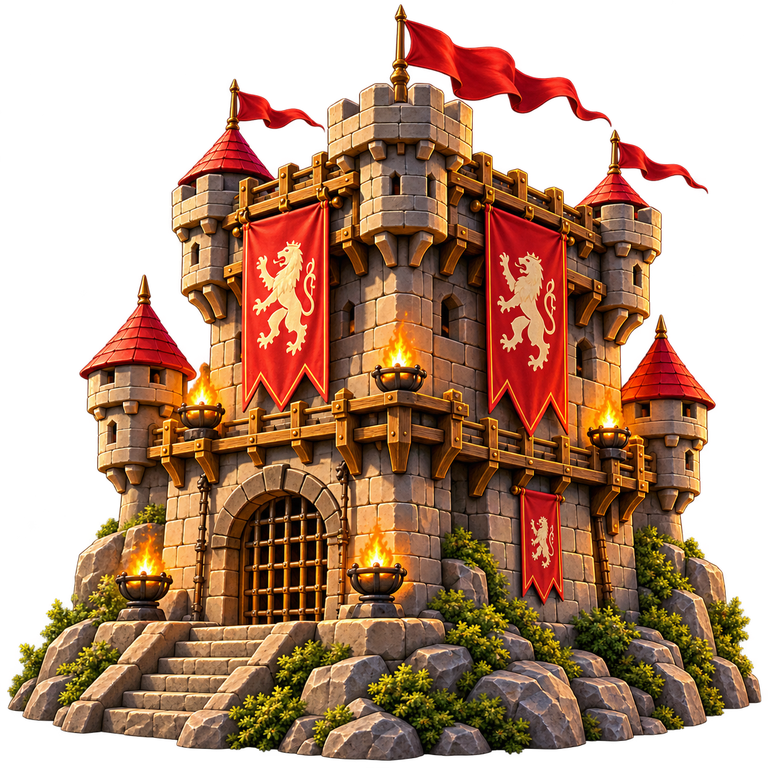

MATCH · DUELL
Regler duell-v1 · Kortlek duell-50-v1
DATORN
Norra tornet
10 kort på handen

STRIDSPLATSEN
Startbyten
30
Draghög0
SlänghögVälj ditt kort
Enkel attack räknas som vanlig attack med styrka 1. Magisk barriär stoppar den.
SPELARE A
Södra tornet
10 kort på handen

SÖDRA TORNETS KORT
Välj kort
10 kort
Tryck på ett kort för att välja det. Håll in ett kort för att läsa hur det fungerar. Svep i sidled för fler kort.
Matchlogg
Utvecklingsläge
Mot datorn styr du Södra tornet; datorn spelar Norra tornet med samma regelkontroll som du. Med två spelare vid samma skärm visas handen för den som står på tur.
Datorns beslut och skäl: